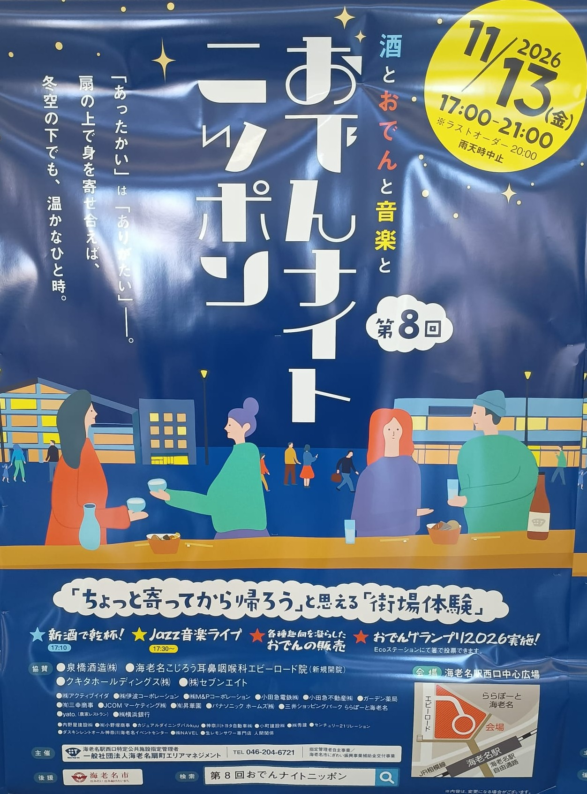
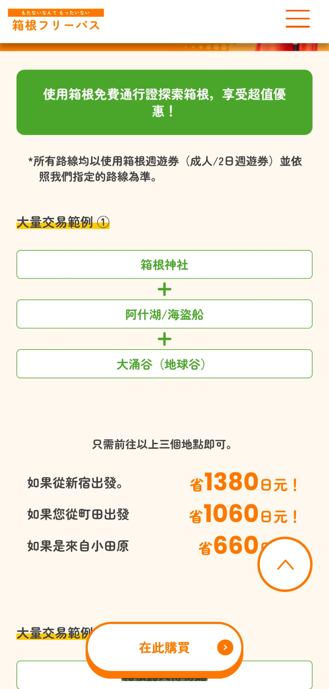

去程 · 11月12日（週四）
HB2326
09:55
香港 HKG
直航
4h 10m
15:05
成田 T2
第一站：神奈川海老名（3晚）
第二站：新宿御苑（3晚）
大灣區航空 Greater Bay Airlines・成田第 2 航廈（T2）
地址欄可點擊直接填寫，會自動存在這部手機
🏨 Hotel Vista Ebina（海老名）｜🚶 全程有電梯及平路
成田 T2 ➔ N'EX ➔ 橫濱或新宿轉車 ➔ 海老名（約 18:00–19:00）
落機前準備好 Visit Japan Web 兩個 QR Code 截圖。過關取行李後，行李全程跟身，直接推去 B1 鐵路層。
唔使死跟某一班。買完飛睇月台顯示屏，最近開出嘅 N'EX 就上，全程對號座。行李全程跟身，所以轉車時間夠唔夠，比快幾分鐘更重要。落車後轉私鐵去海老名，兩條走法：
參考班次：15:48 / 16:23 / 16:48 由空港第2ビル開出，以月台顯示屏為準。
三姨會在車站接你們，先陪你們到 Hotel Vista Ebina 辦理入住及放行李（車站步行約 3–5 分鐘，全平路）。
📍 Hotel Vista Ebina 地圖 ↗去三姨家食晚飯，輕鬆傾偈。回酒店前可以在便利店買定聽朝早餐及水。
路線及時間由三姨安排 ➔ 晚上回海老名晚餐＋夜市
詳細路線、交通及用餐由三姨當日安排，不必按網站時間表行動。山上氣溫比市區低約 5–7°C，記得帶防風外套、頸巾及保溫壺。
箱根一日遊回到海老名後，與三姨一齊出外食晚餐。
食 おでん、試新酒、聽 Jazz。新酒乾杯 17:10、Jazz 現場演奏 17:30 開始。最後點餐 20:00，21:00 結束。
📍 海老名駅西口中心広場 ↗
三姨今日有中學說明會，全日自由行；即日按天氣選
🏨 新宿御苑ステイ（金城ビル）｜🚶 市區節奏，每日一個重點
帶行李搭浪漫特快 ➔ 新宿放行李 ➔ 新宿御苑 ➔ 新宿晚餐
食早餐後退房，行李全程跟身。海老名站有升降機直上月台，唔使抬篋行樓梯；小田急浪漫特快全車對號座，車門旁有行李放置空間。
搭 小田急浪漫特快 一程直達新宿（約 55 分鐘，全車對號座）。建議提前在網上或海老名站窗口劃位，確保一家人坐埋一齊。
先去民宿放行李（金城ビル，新宿御苑前站 2 號出口步行 3 分鐘；如未到 check-in 時間，先問房東可否提早寄存，或使用新宿站的大型置物櫃／人工寄存服務——新宿御苑前站等細站多數只有細櫃，放唔落大篋）。之後在新宿三丁目食午餐（下面 3 選 1）。
由住宿步行入園。11月15日剛好是一年一度皇室傳統「菊花壇展」（11/1–11/15）最後一日，日本庭園內有極罕見的皇室菊花佈置！同時園內的法國梧桐並木（プラタナス並木）及大溫室前大銀杏正值轉黃。園內平路寬敞，多長椅及茶屋（SASAYAIORI+、あのん）。
晚餐在新宿三丁目或高島屋享用了（見下方 3 選 1）。飯後去 伊勢丹新宿店 B1 買時令日本生果、布甸及聽朝搭早車食的麵包返 Airbnb。
📍 伊勢丹新宿店地圖 ↗新宿集合 ➔ 新倉山五重塔 ➔ 忍野八海 ➔ 河口湖楓葉迴廊 ➔ 西湖根場 ➔ 回新宿
集合點一般在新宿站西口一帶（實際位置以確認單為準）。由新宿御苑 Airbnb 去新宿西口，早上可以直接截的士：車程約 8–10 分鐘、約 ¥1,300，免卻父母在新宿站地底迷宮搵出口，行李多或者落雨都輕鬆。
集合時間：
集合地點：
旅行社／確認編號：
點擊上面的空格即可填寫，會自動保存在這部手機。
紅色五重塔（忠靈塔）、秋楓與富士山同框，是全世界攝影師都排隊拍的角度，11 月紅葉配雪頂富士山最靚。由停車場行上去約 10–15 分鐘。
導遊體力貼士：上展望台的「咲くや姫階段」有 398 級石階，父母唔需要夾硬跑樓梯——可以改行右側平緩的車路斜坡（坂道）慢慢上；或者索性留在半山的「新倉富士淺間神社」賞楓、買熱食等大家，風景一樣開揚。
📍 新倉山淺間公園地圖 ↗富士山融雪經地層過濾而成的 8 個清澈湧泉，水清見底，全程平路好行，沿途有茅草屋、水車與富士山景。此站停留時間同時用作午餐（自理）。
午餐貼士：一落車先入店食碗熱騰騰的手打蕎麥麵（例如「池本茶屋」或「名泉そば」），坐低暖一暖；食完再買現烤艾草餅（草餅）、熱豆漿、炸魚餅，邊行邊食。唔好反過來先掃街後食飯，唔係就食唔落正餐，父母下晝會肚餓。
📍 忍野八海地圖 ↗此團於 11/1–11/30 期間特別由大石公園改往「河口湖楓葉迴廊」。2026 年紅葉祭於 11月7日–11月29日 舉行，11 月 16 日正值最紅全盛期——梨川兩岸約 150 米巨型楓樹連成紅葉隧道，全程平路，旁邊有熱食及工藝品屋台，行得慢都唔怕。
📍 紅葉迴廊地圖 ↗
位於西湖畔、重現約 20 棟茅葺屋頂古民家的傳統聚落，背靠零遮擋的富士山與秋楓，係全程最「日本古村」的一站。
開放 09:00–17:00（最後入場 16:30）；大人門票 ¥500、團體 ¥450。視乎你訂的套餐是否已包門票，以確認單為準。
父母慢遊貼士：過橋入口處是拍「茅草屋＋富士山」全景的最佳位置。拍完照唔需要逐間爬坡參觀，可以直接帶父母入園內的「茶処 青龍亭」或「食事処 里山」坐低，飲杯熱抹茶、食件甜品歇腳，等集合時間到。
傍晚經中央自動車道返回新宿，視乎路況約 18:00–19:30 抵達。為免回程塞車有壓力，當晚晚餐唔建議死訂限時餐廳——回到新宿落車後，按實際時間在下方三間之中靈活揀一間。
上午築地或慢起 ➔ 明治神宮 ➔ 銀杏大道二選一 ➔ 新宿晚餐買手信
如果父母早起精神好（選 A）：由新宿三丁目搭都營大江戶線一程直達「築地市場站」（約 23 分鐘，唔使轉車！）。11/17（週二）係正常開市日（11/18 週三先係休市日），可以食壽司、玉子燒，或者去旁邊「築地本願寺 カフェ Tsumugi」坐低歎 18 品日式早餐。
如果想輕鬆慢起（選 B）：唔去築地，喺住宿附近食個靚早餐，10:00 先直接出發去明治神宮。
由原宿站（或明治神宮前站）一出就係 南參道入口。行過 12 米高巨型台灣扁柏大鳥居、兩排壯觀的清酒桶（菰樽）與葡萄酒桶，進入本殿參拜。11 月中旬同時有菊花展擺設。
由明治神宮行過表參道食午餐，沿途全平路，餐廳座位舒適。
根據 2026 年 11 月最新銀杏實況，今日下晝有兩個睇銀杏方案畀你即場揀：
返新宿食最後一晚大餐（松葉蟹宴或和牛 Shabu Shabu，見下方 3 選 1）。飯後在新宿買齊藥妝，返 Airbnb 執好大篋。
新宿早餐 ➔ 10:38 N'EX ➔ 成田 T2 先掃稅關機再寄艙 ➔ 15:10 起飛
檢查：護照、機票、行動電源（必須手提上機，不可寄艙）。確認免稅買嘅物品仲喺身邊（去到機場掃完稅關機先寄艙）。
新宿 10:38 開出的 N'EX，11:53 直達成田 T2（空港第2ビル駅）。全程對號座，車廂有大型行李鎖架。
上到 T2 3樓出發大堂，第一步先推住行李去「税関確認キオスク（Customs KIOSK）」掃描護照。螢幕顯示「確認完了（綠燈）」後，退稅就正式成立（款項會由免稅店或退稅機構退回信用卡／指定帳戶）。如被系統抽中檢查，即場開篋畀海關睇一眼即可。
完成稅關確認後，先去大灣區航空櫃檯將大篋寄艙、拎登機證，再過保安檢查及出境。
禁區內的免稅店直接以「免稅價」結帳，唔使再搞退稅手續！白色戀人、Royce 生朱古力、東京香蕉喺度買最輕鬆。
15:10 起飛，香港時間 19:50 返抵香港機場。
抵達前 2 星期內填寫，過關時直接出示 QR Code
2026 年 11 月起日本改為離境退稅，程序與以往不同
去到即場買就得，唔使提早訂
好多人買錯。簡單講：睇銀杏（日頭或夜晚點燈）只需要大門入場券，唔使訂、唔使另外買庭園券。
邊張值得買、邊度買、幾時用
| 票券 | 用途 | 建議 |
|---|---|---|
| Suica / PASMO | 市區地鐵、JR、便利店 | 必備。iPhone 可直接加進 Apple 銀包，唔使買實體卡。 |
| N'EX TOKYO Round Trip Ticket （成田特快來回優惠票） |
成田機場 ➔ 橫濱／新宿（去程）＋ 11/18 新宿 ➔ 成田（回程），14 日內用完 | 大人 ¥5,200。出示護照喺成田 T2 B1 買，一張包晒去程同回程，去程可以去橫濱、回程可以由新宿走。只包 JR，轉相鐵／小田急要另外畀錢。 |
| 箱根フリーパス （小田原出發 2 日券） |
箱根登山電車、纜車、海賊船、登山巴士 | 一日遊只去大涌谷＋蘆之湖，大約打和；如會加箱根神社、強羅，值得買。官網價格為準。 |
| 江の電 1日乗車券 | 藤澤 ↔ 鎌倉 江之電全線 | 約 ¥800，一日內上落 3 次以上就回本。 |
| 富士山一日遊 | 新宿 ↔ 河口湖（旅遊巴＋導遊） | 已決定跟團，毋須自行訂「富士回遊」或高速巴士。記得確認集合時間、地點及是否包餐。 |
三姨提供的官方頁面：箱根フリーパス 官方網站 ↗
官方示例：由新宿出發，玩箱根神社＋蘆之湖海賊船＋大涌谷，2 日券可比逐段買票節省約 ¥1,380。

建議把此頁加入手機主畫面，以備不時之需
三姨提醒：早晚及海邊風大，車廂內悶熱
點擊打勾，會自動存在這部手機
直接把這幾句給店員或司機看
請載我們到這個地址：
この住所までお願いします。
（kono jūsho made onegai shimasu）
請給我們三個人的座位：
3人です。席をお願いします。
請問洗手間在哪裡？
トイレはどこですか？
可以刷卡嗎？
カードは使えますか？
請給我一張收據：
レシートをお願いします。
我們聽不懂日文：
日本語がわかりません。
旅程中唔使上網搵資料
開此網頁 ➔ 按底部「分享」➔ 選「加入主畫面」➔ 完成。
開此網頁 ➔ 右上角三點 ➔ 選「安裝應用程式」或「加到主畫面」。